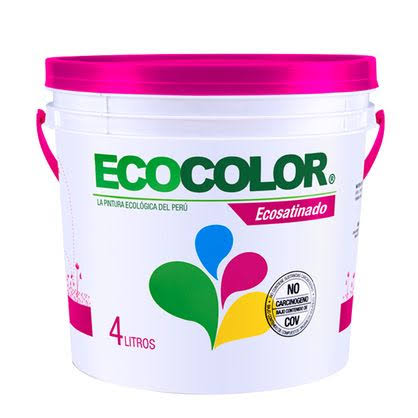

EcoShell Paint transforma cáscaras de huevo y papel reciclado en una pintura natural, resistente y amigable con el planeta.

Una gran cantidad de residuos como cáscaras de huevo y papel terminan contaminando el ambiente. EcoShell Paint busca darles una segunda vida convirtiéndolos en un producto útil para hogares y construcciones.
Nuestra propuesta reduce la acumulación de residuos y disminuye la dependencia de pinturas comerciales que contienen compuestos químicos contaminantes.
Nuestra fórmula utiliza residuos reciclados y componentes naturales para crear una pintura más sostenible.
50%. Aporta carbonato de calcio, aumentando la dureza, resistencia y opacidad.
15%. Sus fibras de celulosa ayudan a mejorar la unión y evitar grietas.
15%. Funciona como aglutinante natural para unir los componentes.
Dan color sin utilizar colorantes sintéticos contaminantes.
Obtención de residuos reciclables.
Lavado y secado de materiales.
Se obtiene polvo y fibras.
Se unen todos los componentes.
La pintura está lista para paredes.
| Pintura comercial | EcoShell Paint |
|---|---|
| Componentes químicos | Materiales naturales |
| Genera más residuos | Reutiliza residuos |
| Mayor impacto ambiental | Menor contaminación |
| Costo elevado | Producción económica |
Elige la presentación ideal para tu proyecto.
"Una alternativa innovadora y ecológica para proteger el planeta."
"Convierte residuos comunes en un producto útil y resistente."
"Una pintura diferente con enfoque sostenible."
Material reciclado utilizado
Enfoque ecológico
Residuos desperdiciados